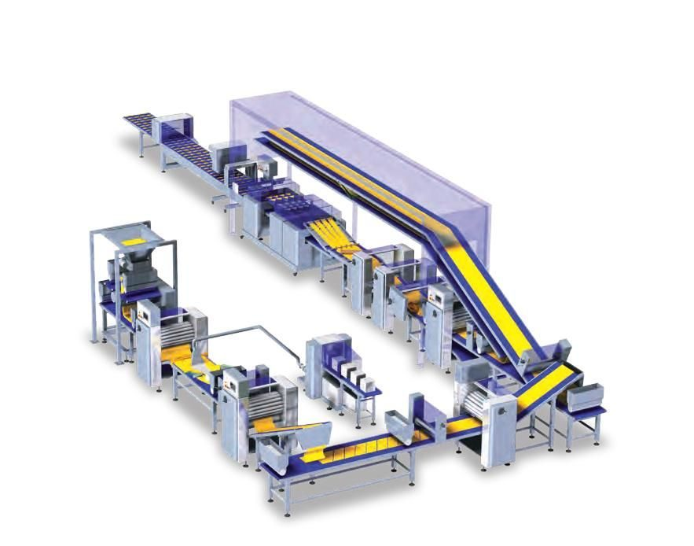
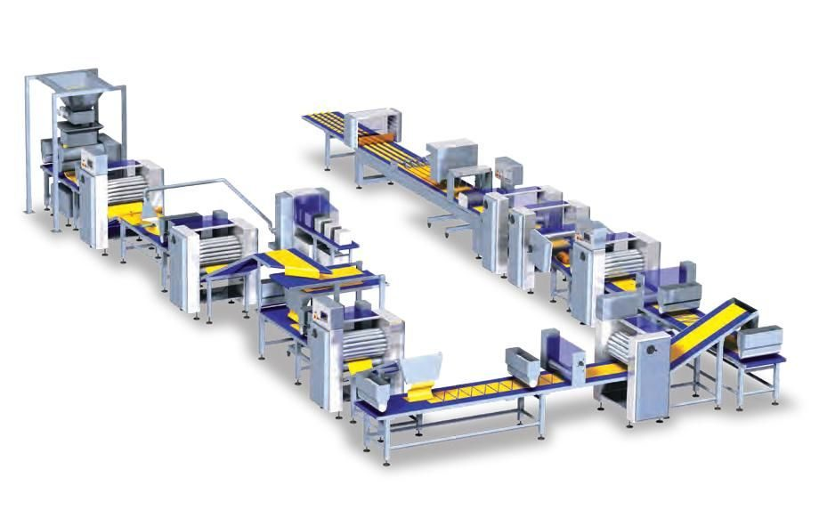
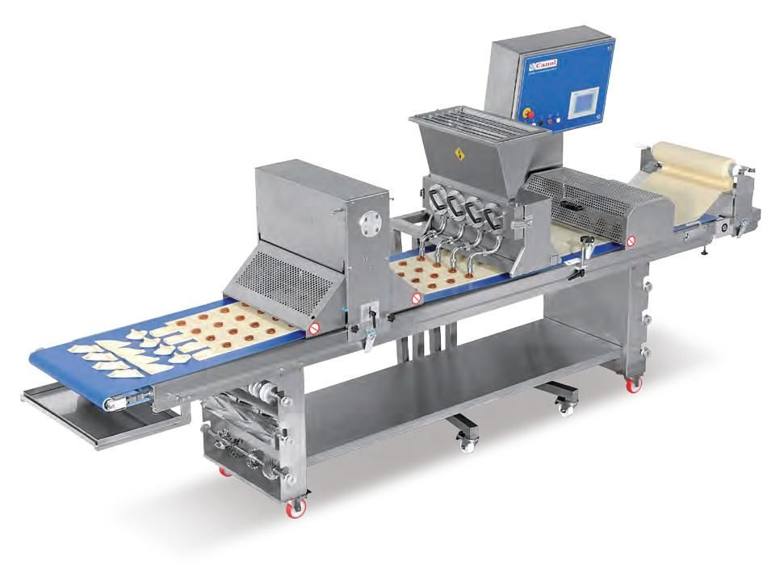
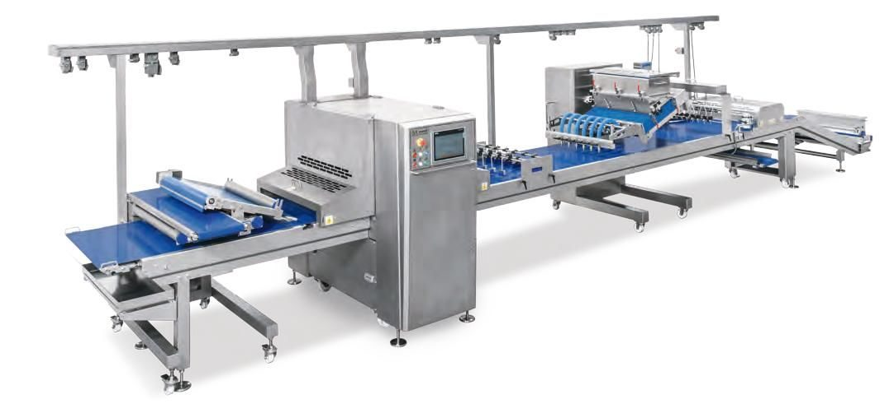
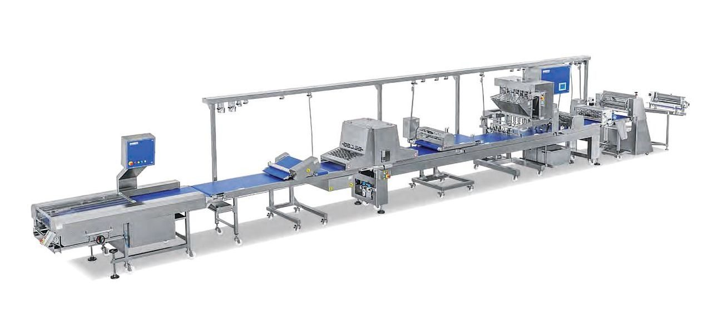
CANOL
Линии ламинации теста
Непрерывная ламинация слоёного, дрожжевого и слоёно-дрожжевого теста. Расположение модулей и рабочих столов согласуют с планом цеха.
- 2 или 3 станции сложения
- Компоновки U, L и S
Фотографии и схемы

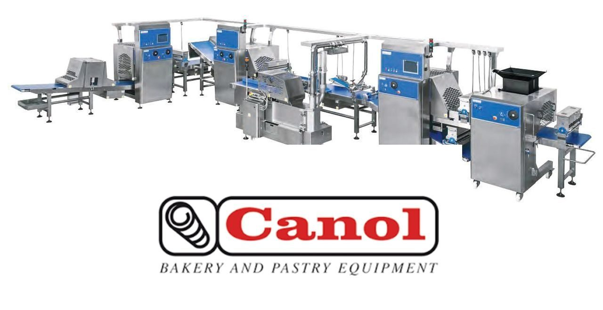


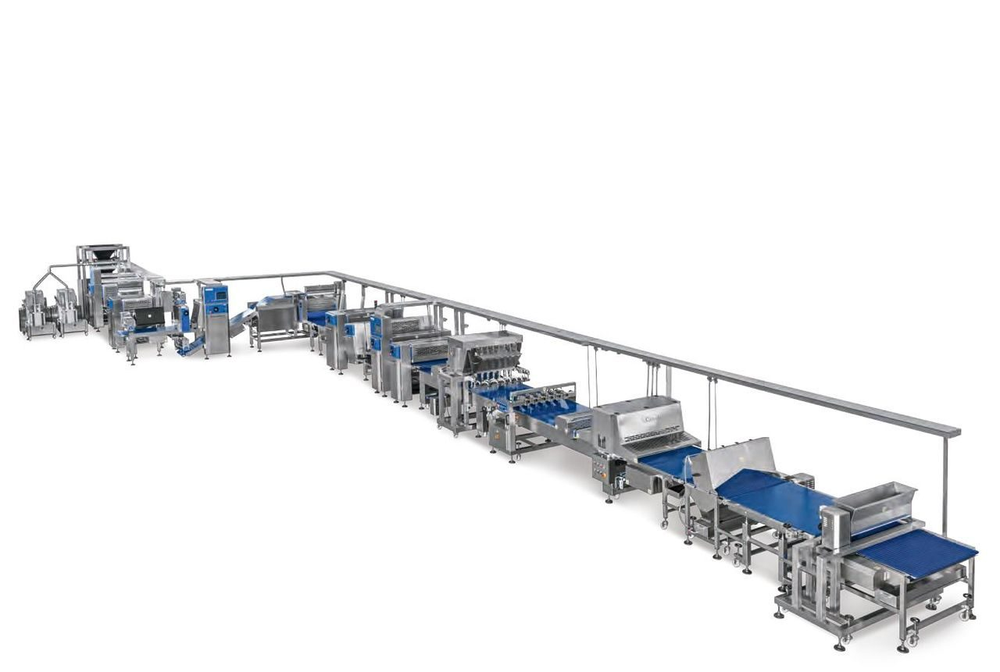

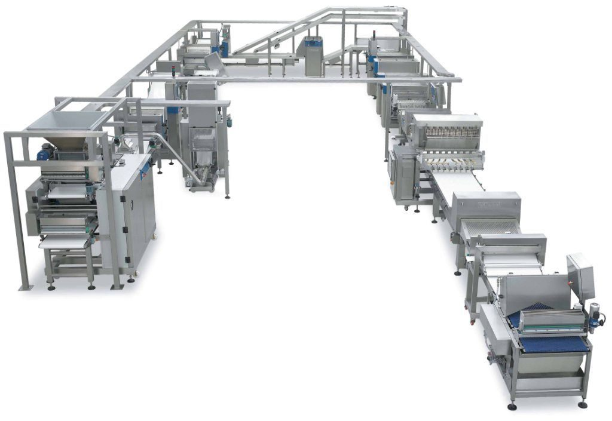


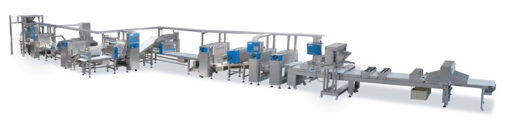

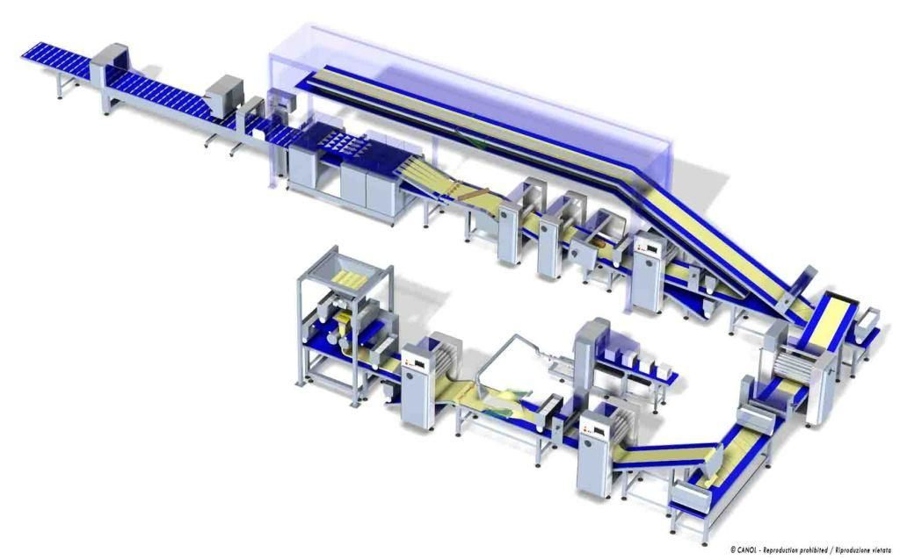


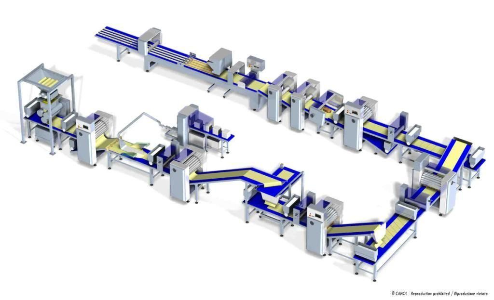

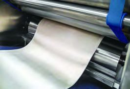

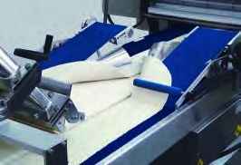

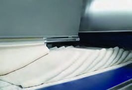

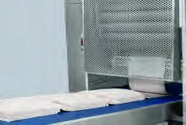

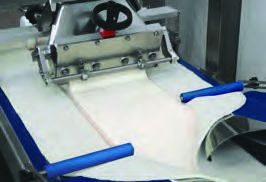

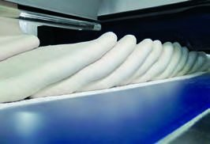

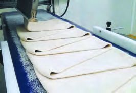

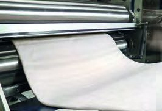


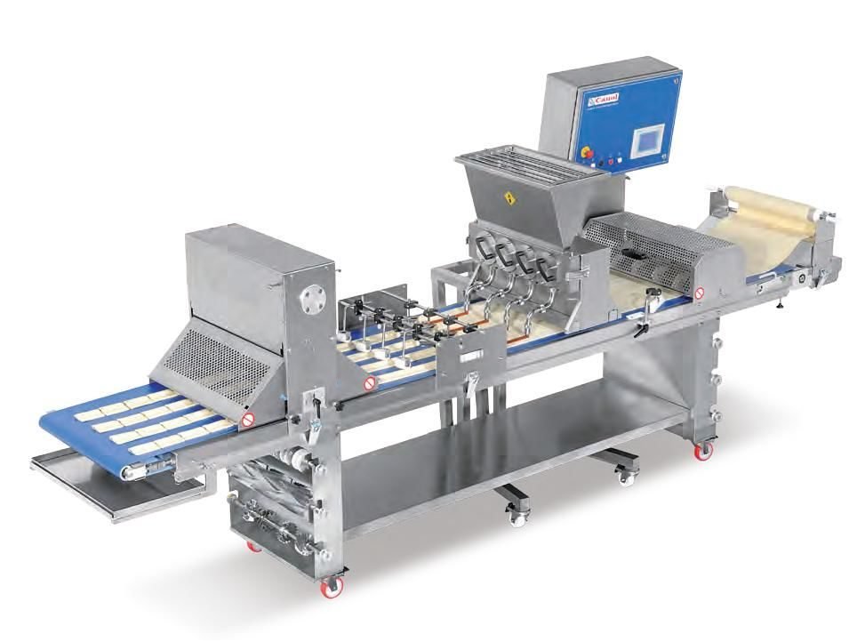

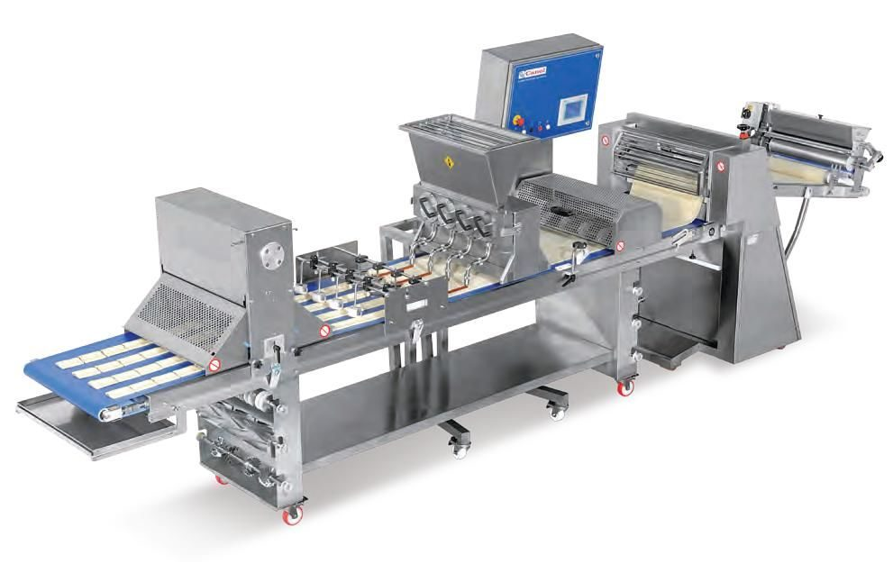


В описании CANOL перечислены компоновки U, L и S. Одна из схем подписана Z. Уточним геометрию линии по плану вашего цеха.
Описание и комплектация
Автоматические линии ламинирования теста CANOL s.r.l (Италия) используются для непрерывного производства теста различных видов: слоеное, дрожжевое, датское слоено-дрожжевое или тесто для круассанов. Тесто в ламинаторе CANOL не подвергается давлению, минимизируются возможные напряжения тестовой ленты, поэтому продукция на выходе сохраняет однородность и качество.
- Производитель: Италия
- 3 варианта конфигурации ламинаторов: U, L, S
- Дополнительно можно приобрести рабочие столы CANOLINO и Canol-Line
Наша компания TRADE TECHNOLOGIES на правах представителя поставляет линии ламинации теста CANOL в Россию, Грузию, Белоруссию, Казахстан. Доступны различные технические конфигурации ламинаторов для любого уровня автоматизации производства. Есть варианты c 2-мя или 3-мя станциями сложения, традиционных L-, U-, S-образных форм, а также возможно выполнение под заказ нестандартных линий с учетом технических потребностей клиента и свободного пространства под установку оборудования.
Конструкция линий ламинирования CANOL – модульная. Их всегда возможно расширить и дополнить новыми блоками в соответствии с потребностями заказчика при увеличении мощностей и автоматизации производства. Мы принимаем и выполняем такие заявки.
На ламинаторы CANOL можно установить транспортерные ленты для релаксации теста, а также камеры с регулируемым режимом температуры. Это совмещает обеспечение качества с автоматизацией производства. Линии ламинирования теста CANOL надежны и просты в эксплуатации, подходят под различные производственные мощности: от масштабного завода до небольшой пекарни. На них можно готовить тесто даже по сложным рецептам.
Рабочие столы Canolino и Canol-Line
Для изготовления изделий из различных видов теста наши заказчики могут приобрести рабочие столы CANOL модификаций Canolino и Canol-Line. Это простое, относительно небольшое по габаритам оборудование: металлический корпус на резиновых колесах с тормозами, на котором установлена транспортерная лента. Скорость её движения регулируется. Оборудование популярно на производстве кондитерских изделий малых и средних объемов.
Материалы производителя
CANOL проектирует оборудование для пекарен и кондитерских в Италии с 1973 года. Мы поставляем линии на правах представителя завода.
Стоимость и поставка
Стоимость рассчитываем по комплектации. Для оборудования CANOL доступны выкуп, лизинг и рассрочка. Безналичная оплата в рублях по курсу ЦБ РФ на день оплаты. В предложенной схеме платежи составляют 30%, 60% и 10%, последний платёж — после ввода в эксплуатацию.